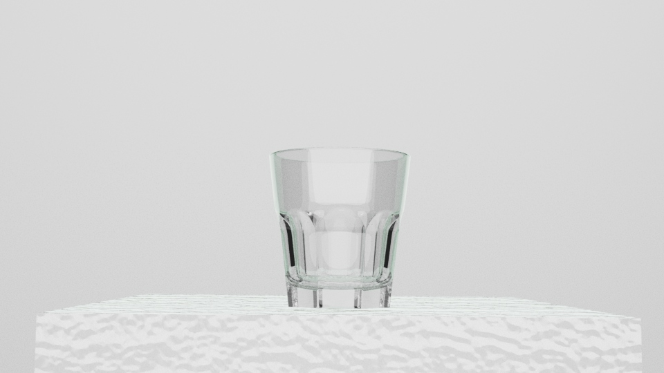

3D & Motion Practice
收錄 3D 動畫、建模練習與線上 3D 互動嘗試，呈現不同軟體與媒材中的空間、物件與動態探索。
Info
Type｜3D Practice / Motion
Category｜Blender / Maya / Spline
Format｜Video / Render Image
Year｜2026
Concept
本頁整理課程與練習過程中的 3D 相關作品，包含 Blender 動畫、Maya 靜物練習與 Spline 線上 3D 嘗試。 作品多以基礎建模、材質、燈光與動態表現為核心，作為我對空間影像與立體視覺的初步探索。
Blender Animation
* 其中部分影片原作品搭配版權音樂呈現，作品集中以靜音版本展示。
Team
林靖威
動畫製作、技術整合與系統調整
林憲祥
動畫參數調整與互動測試
周書妤
概念發想、視覺方向規劃與部分參數調整
吳庭君
視覺設計與畫面製作
王子宸
動畫參數調整與專案協助
Maya Practice
以 Maya 製作的基礎建模與靜物練習，包含物件造型、材質設定、燈光與渲染嘗試。

Bottle

Glass
Spline / Web 3D
以線上 3D 工具進行的角色建模練習，嘗試將角色造型轉換為簡單的立體物件。

BMO 01
BMO Motion